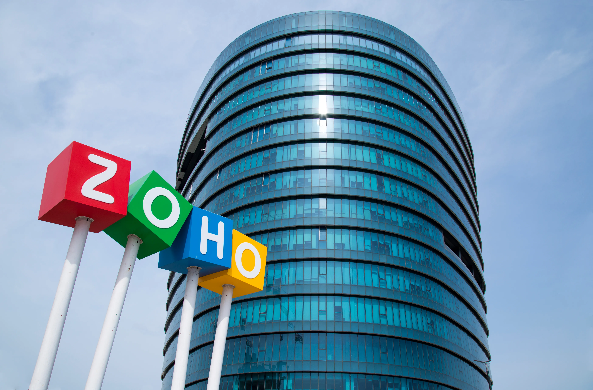
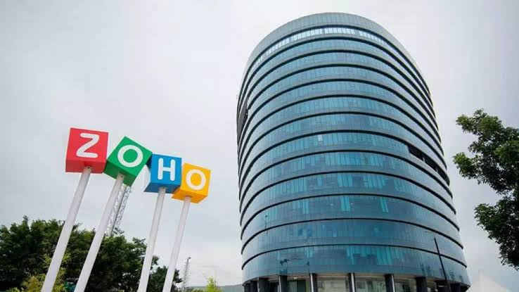

TCS Company Details




Tata Consultancy Services (TCS) in Chennai is a major IT hub for the Tata Group, employing tens of thousands of professionals across 16+ locations. It operates the 71-acre Siruseri campus (Asia’s largest TCS facility) and various city offices in Velachery, Thoraipakkam, and Cathedral Road, providing end-to-end software development and IT consulting.
TCS’s Chennai footprint is deeply rooted in its technology heritage, having launched the largest mainframe site in India in 1987. Today, the Chennai centers cater to global clients across IT services, consulting, and Business Process Services (BPS).
Tata Consultancy Services (TCS) in Chennai provides end-to-end IT services, consulting, and business process outsourcing. Operating out of major hubs like the 71-acre Siruseri campus, Tidel Park, and Velacheri, the offices serve as major delivery centers for global AI development, cloud migration, and domain-specific enterprise solutions.
Tata Consultancy Services (TCS) in Chennai operates major delivery centers across the city (including SIPCOT Siruseri and Velachery). The company supports local businesses and global enterprises by providing enterprise AI scaling, IT consulting, and software development solutions. Additionally, TCS supports the local community through tech initiatives, such as digitally powering the Cancer Institute (WIA).
📍 11th Floor, A Block, TIDEL Park, Canal Bank Road, Tharamani, Chennai – 600113.
📞 044 6616 3555
📍 ETL Infrastructure Services Ltd IT SEZ, 200 Feet Radial Road, Perungudi, Chennai – 600097
📞 044 6616 8888
📍 SIPCOT IT Park, Siruseri, Chennai – 603103
📞 044 6742 2222



Zoho Corporation is a global technology company headquartered in Chennai, India, that develops cloud-based business software suite and productivity tools. Founded in 1996 by Sridhar Vembu and Tony Thomas, it is famously bootstrapped, privately held, and profitable, serving over 150 million users worldwide.
Zoho Corporation is a global technology company headquartered at Estancia IT Park, GST Road, in Chennai. It provides over 55 cloud-based software products for CRM, finance, email, and HR. Because of its Chennai base, local businesses receive direct R&D proximity, optimized data centers, and specialized implementation support.
Zoho Corporation is a global SaaS giant headquartered at Estancia IT Park on GST Road, Maraimalai Nagar, Chennai. They help local enterprises and global users operate digitally by providing over 60 integrated cloud-based applications, spanning CRM, Finance (Zoho Books), IT management, and HR, all managed from their massive Chennai campus.


Infosys (NSE: INFY, NYSE: INFY) is an Indian multinational IT services and consulting giant headquartered in Bengaluru. Founded in 1981 by seven engineers with just $250, it is now India's second-largest IT company by revenue. Today, it employs over 320,000 people globally and operates in more than 50 countries.
Infosys offers a wide array of services including AI-powered analytics (via Infosys Topaz), cloud migration, cyber security, and business process management (BPM). The company is famously known for pioneering the "Global Delivery Model" in the IT industry. It also holds the distinct title of being the first Indian company to be listed on the NASDAQ (in 1999).
Infosys provides global IT, consulting, and business process management (BPM) services. Their core offerings include digital transformation, cloud migration (Infosys Cobalt), AI/automation (Infosys Topaz), enterprise application implementation (SAP, Oracle, Salesforce), cybersecurity, and software products like the Finacle banking platform.
Infosys is a global technology consulting and IT services company that helps large organizations undergo digital transformation. They assist businesses by streamlining operations, modernizing cloud infrastructure, developing custom software, and integrating Artificial Intelligence (AI) to improve efficiency and customer experiences.
🏢 Company :Infosys
📍 Head Office Address: Plot No. 44/97A, Hosur Road, Electronic City, Bengaluru, Karnataka – 560100.
📞 Phone : +91 80 2852 0261
🌐 Official Website : infosys